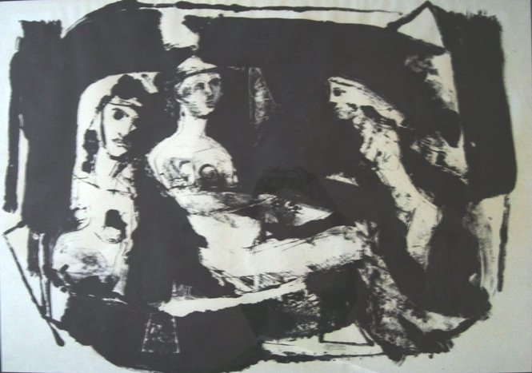

Ayyad Al-Nimer
B. 1948
Artist Biography
Ayyad Al-Nimer was born in Egypt and studied at the Fine Art Academy, Cairo, graduating in 1977. He moved to Jordan and then in 1989 relocated to the United States and is now based in California. In Jordan Al-Nimer taught art and then set up a private gallery and was instrumental in reviving the art scene in the country. Al-Nimer continues to show widely, with solo exhibitions in the last few years in Kuwait, Cairo, Jordan, New York and Ukraine amongst other venues. Although he paints on a large scale in oils, his best known work is a long series of black and white painted monotypes. The National Museum of Jordan in Amman holds his work, as does the Museum of Contemporary Art in Yinchuan, China.

Untitled, 1995